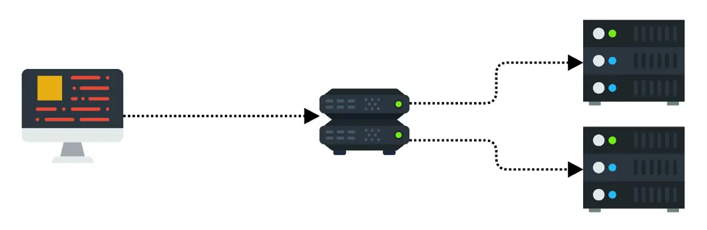
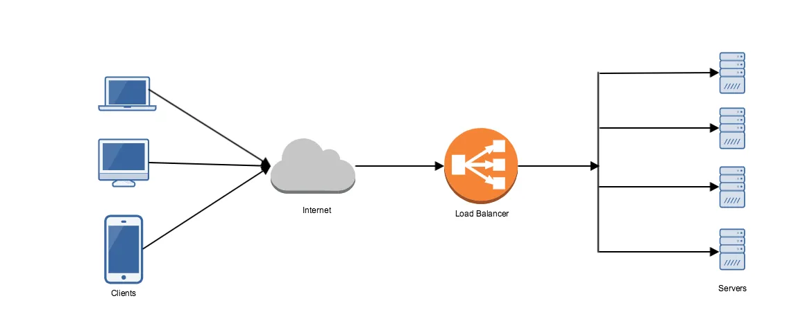

Load Balancing and Load Balancer

[Source: https://medium.com/containers-on-aws/using-aws-application-load-balancer-and-network-load-balancer-with-ec2-container-service-d0cb0b1d5ae5]
Load Balancing Link to heading
Load balancing is the process of efficiently distributing network traffic across multiple servers also known as a server farm or server pool. By distributing the load evenly load balancing improves responsiveness and increases the availability of applications. It has become a necessity as applications become more complex, user demand grows and traffic volume increases.
Load balancing is the most straightforward method of scaling out an application server infrastructure. As application demand increases, new servers can be easily added to the resource pool and the load balancer will immediately begin sending traffic to the new server.
Load Balancer Link to heading
A load balancer is a device or software that distributes network or application traffic across a cluster of servers. A load balancer acts as a “traffic cop” sitting in between the client and the server accepting incoming network and application traffic and routing request across multiple backend servers capable of fulfilling those requests. By balancing requests across multiple servers, a load balancer reduces individual server load and prevents any one application server from becoming a single point of failure.

Load balancer features: Link to heading
- If a single server goes down, the load balancer removes that server from server group and redirects traffic to the remaining online servers
- When a new server is added to the server group, the load balancer automatically starts to send requests to it.
- Distributes clients request or network load efficiently across multiple servers.
- Ensure high availability and reliability by sending request only to the servers that are online.
- Provides the flexibility to add or subtract servers as demand dictates.
- Can be added at multiple layers ( application server, databases, caches etc) in the application stack
- Can dynamically add or remove servers from the group without interrupting existing connections.
While routing requests to multiple backend servers load balancer choose the server based on two factors. First, ensure that the server they choose is responding and then choose one server based on a pre-configured algorithm from the set of healthy servers.
Health Checks: To make sure load balancer forward traffic to only healthy servers, “health checks” regularly attempt to connect to backend servers to ensure that servers are listening. If a server fails a health check, it is automatically removed from the pool, and traffic will not be forwarded to until it responds to the health checks again.
Load Balancing Algorithms: Link to heading
- Round Robin — When load balancer receives a request, it assigns the request to the first server in the list and then moves that server to the bottom of the list.
- Least Connections - A new request is sent to the servers with fewest current connections to the clients. The relative computing capacity for each server is factored into determining which one has the least connections.
- Least Response Time — Directs the traffic to the server with fewest active connections and lowest average response time.
- Least Bandwidth Method — Server that is currently serving the least amount of traffic, measured in megabits per second (Mbps)
- IP Hash - The IP of the clients is used to determine which server receives the request.
Session persistence or Sticky Session: Link to heading
Session persistence or sticky session is a feature of some of the commercial load balancer where they route all the requests for a particular session to the same physical machine that serviced the first request for that session to improve performance.
For example, when upstream servers stores information requested by a user in its cache to boost performance, switching server would cause that information to be fetched for the second time creating performance inefficiency which can be removed by using Session persistence or Sticky Session.
Load Balancer Capabilities: Link to heading
L4 Load Balancer: Directs traffic based on data from network and transport layer protocols such as IP Address and TCP Port.
L7 (Load balancing and Content Switching) Load Balancer: Makes routing decisions based on application layer data and attributes, such as HTTP header, uniform resource identifier, SSL session ID and HTML form data.
GSLB (Global Server Load Balancing): Extends the core L4 and L7 capabilities so that they are applicable across geographically distributed server farms.
Hardware Load Balancer vs Software Load Balancer Link to heading
Hardware Load balancer runs proprietary software loaded into a machine which often uses a specialized processor for optimization.
- Difficult to scale as we need to add more hardware as load increases
- Very expensive because of the high cost of purchase and maintenance of physical load balancer. Also, need a specialized consultant for maintenance and installation.
- Increased security due to physical hardware
Software Load Balancer usually runs on less expensive commodity hardware. It can be installed and run anywhere in the public or private cloud.
- Less expensive as runs on commodity hardware
- Easy to scale by simply running additional instances of the load balancer
- Flexibility to adjust based on changing needs
- Can run anywhere
- Some smart software-based load balancer provides predictive analytics that determines traffic bottlenecks.
Redundant load balancers: Link to heading
A load balancer can also become a single point of failure. To avoid a single point of failure we can add more than one load balancer on different physical machines in the same cluster. If main load balancer goes down then second load balancer takes over.